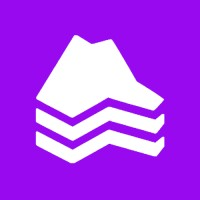

Perfil Profesional
Estudiante de Ingeniería Civil Electrónica con sólida base técnica en hardware y automatización, actualmente especializándose en Data Engineering. Cuento con experiencia práctica en la resolución de problemas complejos, desde la reparación de sistemas electrónicos hasta la creación de una empresa de diseño digital S&F Atelier. Mi enfoque combina la precisión de la electrónica con el manejo de flujos de datos, buscando mi primera oportunidad profesional en el área de datos para aplicar conocimientos en Python, SQL y procesos ETL.
> Sistema inicializado. Escribe 'help' para ver opciones...
Experiencia Destacada

Founder & Lead Designer | S&F Atelier
Viña del Mar, Chile
▼
Founder & Lead Designer | S&F Atelier
Viña del Mar, Chile- Diseño y construcción de Router CNC de 3x2 metros con perfiles de aluminio y motores paso a paso.
- Modelado 3D avanzado en Fusion 360 y SketchUp para mobiliario y piezas mecánicas.
- Implementación de control electrónico mediante diseño del tablero eléctrico y software Mach3.

Data Engineer Junior | Andes Hosting
Valparaíso / Remoto
▼

Data Engineer Junior | Andes Hosting
Valparaíso / Remoto- Desarrollo de flujos ETL utilizando Python y orquestación con Dagster.
- Consultas y gestión de bases de datos con SQL y ClickHouse.
- Creación de dashboards dinámicos con Power BI y herramientas web como Streamlit.
Instalador de Equipos Transbank | Adexus
Viña del Mar / Valparaíso
▼
Instalador de Equipos Transbank | Adexus
Viña del Mar / Valparaíso- Instalación y configuración técnica de terminales de punto de venta (POS) Transbank.
- Diagnóstico básico de conectividad y redes para el funcionamiento de los equipos.
- Gestión de rutas de atención técnica cumpliendo con estándares de calidad corporativos.
Otras Habilidades de Adaptación
Gestión de alta demanda de usuarios, resolución de conflictos en terreno, manejo de sistemas de recaudación y cuadratura de caja.
Ejecución de instalaciones eléctricas seguras y dignas en sectores vulnerables. Mi labor se enfoca en combatir la precariedad energética mediante sistemas normalizados.
Portafolio de Proyectos


Diseño y Construcción de CNC
Desarrollo estructural en perfiles de aluminio y sistema de control Mach3. Desde el modelado 3D hasta la puesta en marcha técnica.
Arquitectura de Datos
Pipelines ETL escalables y visualización de métricas de ingeniería en tiempo real.


Habilidades Técnicas
Software & Data
Hardware & Fab
Formación Académica
Ingeniería Civil Electrónica
Pontificia Universidad Católica de Valparaíso (PUCV)
En cursoTécnico en Electrónica
Licencia de Enseñanza Media con Titulación Técnica
Titulado